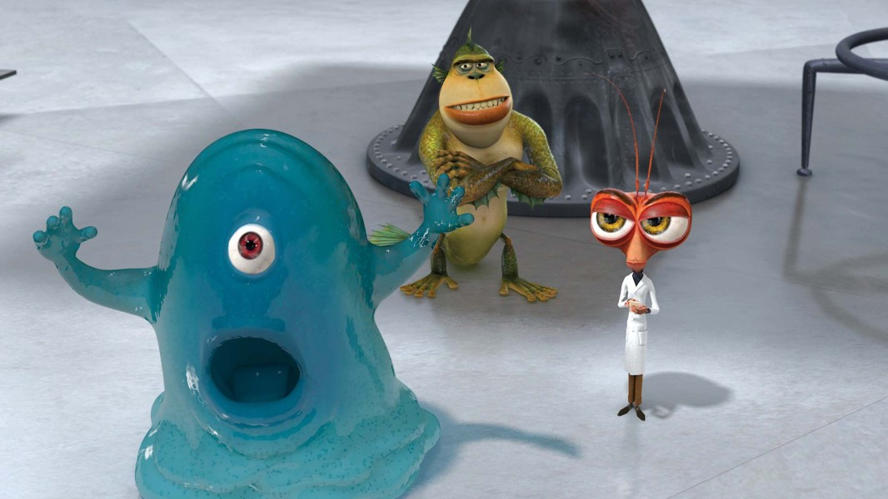

No Brain, No Pain — Amorphous Doctrine
The indestructible blob — no brain, no pain, no vital organs. He engulfs his problems and eats the evidence.

No Brain, No Pain — Amorphous Doctrine
The indestructible blob — no brain, no pain, no vital organs. He engulfs his problems and eats the evidence.
Feature map
Six observations, recorded in the order the specimen demonstrated them. He was delighted throughout.
Amorphous
Passive.
You are a blob, and blobs do not respect architecture. You can squeeze through any gap at least 1 inch wide without penalty, you can move through the space of a hostile creature (treating it as difficult terrain), and you have advantage on ability checks made to escape a grapple. Field note: offered a keyhole and a locked door, the specimen chose the keyhole, giggling.
No Brain to Break
Passive.
There is no mind to frighten and no heart to charm. You are immune to the frightened and charmed conditions, and you have resistance to psychic damage. Field note: the specimen cannot be insulted, threatened, or reasoned with, for the excellent reason that there is nothing in there to receive the message.
Engulf
Part of a grapple · no CE.
When you grapple a creature of your size or smaller, you may engulf it: it is pulled inside you. An engulfed creature is restrained and blinded, cannot breathe, and takes 2d6 bludgeoning damage at the start of each of its turns (the squelch). It may escape by succeeding on a Strength (Athletics) or Dexterity (Acrobatics) check against your CE save DC as an action. You can engulf only one creature at a time — until the Maximum, anyway. Field note: the specimen describes this as "a hug." The hug does 2d6.
No Vital Organs
Passive.
There is nothing in you that a blade can find. Critical hits against you become normal hits, and you have resistance to piercing damage. Field note: stabbed repeatedly for science, the specimen reported that it "tickled."
Indestructible
Passive.
Whenever you take damage from a single source, reduce that damage by an amount equal to your Constitution modifier + your proficiency bonus. Field note: dropped, shot, flattened, and microwaved — the specimen's own words — he has never once been inconvenienced.
Snack Time
Bonus action · PB/long rest.
You can eat anything. As a bonus action, you consume one unattended, nonmagical object of Small size or smaller within 5 ft of you — it vanishes into you, wrappers and all. You regain hit points equal to 1d8 + your Constitution modifier. You may do this a number of times equal to your proficiency bonus per long rest. Field note: the specimen asked whether the parking meter was "a snack or a friend." It was a snack.
Maximum, Domain, or equivalent.
Capstone material.
The Blob
You become the disaster movie. You grow to Huge size for 1 minute. Each creature within 15 ft of you must make a Dexterity saving throw against your CE save DC: on a failure it is engulfed (as Engulf, except it takes 3d6 bludgeoning damage at the start of each of its turns, and you may engulf any number of creatures of Large size or smaller). On a success it is pushed 10 ft away from you instead. When the effect ends, engulfed creatures are expelled into unoccupied spaces within 5 ft of you. Field note: at this scale the giggling is audible from three blocks away.
Splat and Reform
You cannot be destroyed, only briefly inconvenienced. Once per long rest, when damage would reduce you to 0 hit points, you splat instead: you take no damage from that instance, fall prone in your space as a quivering puddle, and at the start of your next turn you reform with hit points equal to half your maximum. While a puddle you cannot take actions, bonus actions, or reactions, and attack rolls against you have disadvantage — good luck hitting jelly. Field note: the specimen has been exploded four times on record. He remembers none of them, which he considers ideal.
Build-defining options.
These are optional character-building feats. You must meet each listed prerequisite before selecting it.
Through the Keyhole
One willing creature of your size or smaller can ride inside you. While inside, it has total cover, can breathe normally, and moves with you — including through gaps as narrow as 1 inch when you squeeze. It may climb out as a bonus action on its turn. Smuggling friends past security is just another kind of hug.
Jelly Vault
You can engulf unattended objects of Medium size or smaller, not just creatures. An engulfed object is hidden inside you: it cannot be seen, weighs nothing, and cannot be detected by nonmagical means. You may expel any or all stored objects as a bonus action. The specimen insists this is "just holding things." The specimen is technically correct.
Get Behind the Blob
When an ally within 5 ft of you takes damage from a single source, you may use your reaction to flow between them and the harm: you take the damage instead, reduced by your Indestructible reduction. The blob does not dodge. The blob is the dodge.
Blank Slate
There is nothing to read. Divination effects, and any other effect that would read your thoughts, sense your emotions, or discern your alignment, automatically fail against you — and any creature attempting to do so learns only that you are thinking about snacks. Probably.